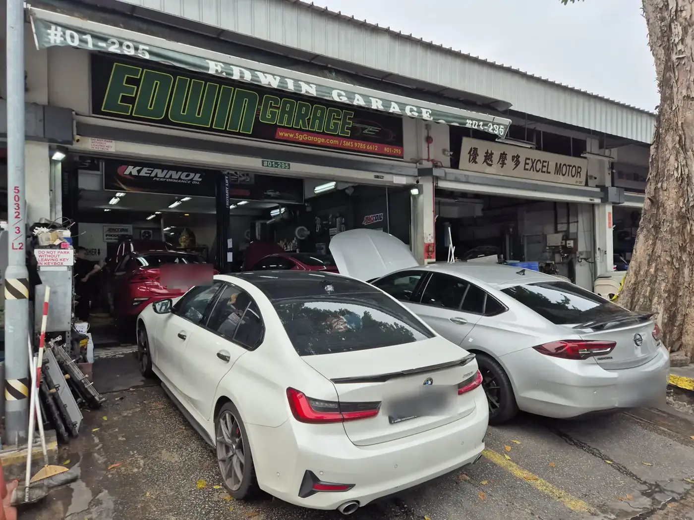

Owned by the site's founderServicing
Edwin Garage
4.9 (600+ Google ratings) (checked November 2026) See Google reviews
Owner-run car workshop in Ang Mo Kio Industrial Park 2, open Monday to Saturday.
Ang Mo Kio has a long-running industrial estate, Ang Mo Kio Industrial Park, with workshops serving the north-east.
Ang Mo Kio is a mature town in the north-east of Singapore. Ang Mo Kio MRT station on the North South Line sits beside AMK Hub, and Mayflower MRT on the Thomson-East Coast Line serves the western side. Bishan-Ang Mo Kio Park, Ang Mo Kio Town Garden West and Ang Mo Kio Public Library are well-known local spots. The Ang Mo Kio Industrial Parks along Ang Mo Kio Avenue 3, 5 and 10 hold trade units and workshops away from the housing blocks. The Central Expressway and Seletar Expressway pass nearby, linking the area with Yishun, Bishan and Serangoon North.
Nearby MRT stations include Ang Mo Kio, Mayflower and Yio Chu Kang. Landmarks include AMK Hub, Bishan-Ang Mo Kio Park and Ang Mo Kio Industrial Park. Back to the North-East region.

Owned by the site's founder4.9 (600+ Google ratings) (checked November 2026) See Google reviews
Owner-run car workshop in Ang Mo Kio Industrial Park 2, open Monday to Saturday.
4.6 (101 Google ratings) (checked November 2026) See Google reviews
10 Ang Mo Kio Industrial Park 2A, #03-13 AMK AutoPoint, Singapore 568047
General servicing and repair
Customers mention: Car servicing and maintenance, Free car wash after repair, On-time delivery
10 Ang Mo Kio Industrial Park 2A, AMK AutoPoint, #02-18, Singapore 568047
European car servicing (BMW, Mercedes, Audi, VW)